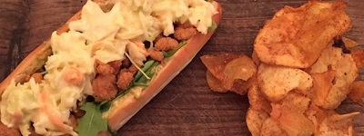

Jazzy's Restaurant

Restaurant Description
Established in 1999, Jazzy's has become the local hot spot for nearly 20 years! Signature dishes include the 10 hour slow cooked Tenderloin Sandwich or the classic Italian Sausage and Peppers served with savory garlic mashers. Great for family dining or for casual gatherings with friends, Jazzy's will not disappoint!